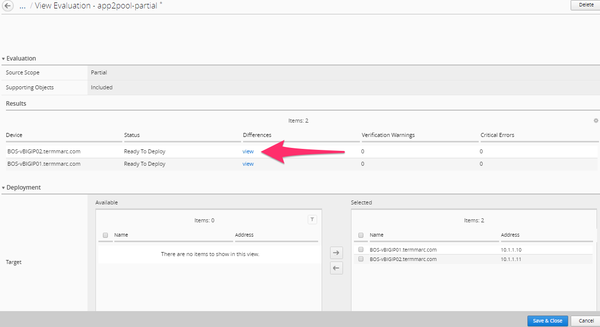
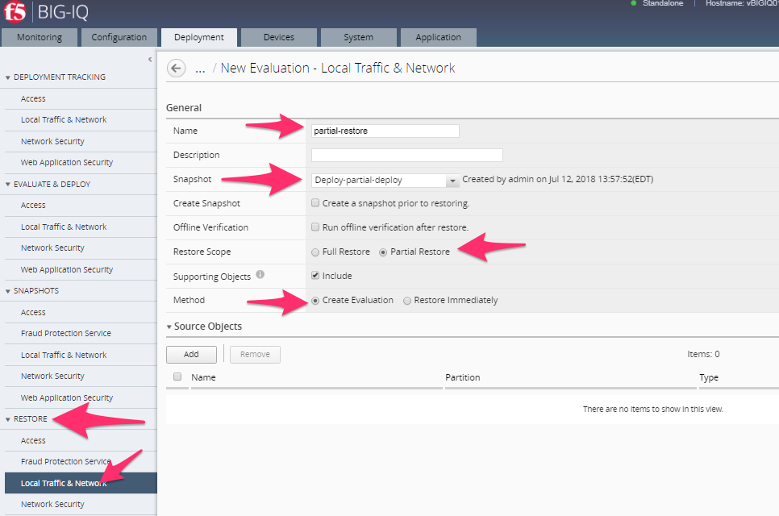

Community Training Classes & Labs > Agility 2018 BIG-IQ CM Access - Self Guided Index
BIG IQ 5.4 Self Guided Lab Guide
Participant Hands-on Lab Guide
Version: 3.0

Last Updated: 7/12/2018
©2018 F5 Networks, Inc. All rights reserved. F5, F5 Networks, and the F5 logo are trademarks of F5 Networks, Inc. in the U.S. and in certain other countries. Other F5 trademarks are identified at f5.com.
Any other products, services, or company names referenced herein may be trademarks of their respective owners with no endorsement or affiliation, express or implied, claimed by F5.
These training materials and documentation are F5 Confidential Information and are subject to the F5 Networks Reseller Agreement. You may not share these training materials and documentation with any third party without the express written permission of F5.
How to access the lab in the Ravello environment 7
BIG-IQ Access Policy Manager 11
WORKFLOW 1: Access Policy Review 11
WORKFLOW 2: Location Specific Object Modification 12
WORKFLOW 3: Modifying an existing APM access policy using VPE 14
WORKFLOW 4: Create a new VPN Access profile 19
WORKFLOW 5: View APM Audit logs and Dashboards 26
WORKFLOW 1: Setting up of BIG-IQ Data Collection Devices (DCD). (REQUIRED) 33
WORKFLOW 2: Importing BIG-IP devices for management and inventory (REQUIRED) 36
WORKFLOW 5: Automating device backups and archiving a copy of the backup file 44
WORKFLOW 6: Uploading QKviews to iHealth for a support case 47
BIG-IQ Partial Deployment | Partial Restore 51
WORKFLOW 1: Create multiple changes. Deploy single change. (REQUIRED) 51
WORKFLOW 2: Create and deploy multiple changes with selected roll-back. (REQUIRED) 60
Overview¶
This document details the lab exercises and steps that should be followed by the student to learn about BIG-IQ Access specific functions as they relate to managing BIG-IP Access Policy Manager.
The environment is setup with basic configuration and associated traffic generation to populate dashboards for these exercises. BIG-IQ could be managing BIG-IPs in Azure and Google Cloud, as well as on premesis for example. This can be a powerful management tool for customers that are talking about multi-cloud management.
Introduction
This lab environment is designed to allow for quick and easy demonstration of a significant portion of the BIG-IQ product. The Linux box in the environment has multiple cron jobs that are generating traffic that populates the monitoring tab.
Device Information¶
| Device Name | Mgmt IP | Version | Username/pw | Provisioning |
|---|---|---|---|---|
| BIGIQ_CM_5.4 | 10.1.1.4 | 5.4.0 | admin/admin root/default |
BIG-IQ Console |
| BIGIQ_DCD_5.4 | 10.1.1.6 | 5.4.0 | admin/admin root/default |
BIG-IQ Data Collection Device |
| BOS-vBIGIP01.termmarc.com | 10.1.1.10 | 13.1.0 | admin/admin root/default |
LTM, DNS, ASM, AFM, APM |
| BOS-vBIGIP02.termmarc.com | 10.1.1.11 | 13.1.0 | admin/admin root/default |
LTM, DNS, ASM, AFM, APM |
| ip-10-1-1-7.us-west-2.compute.internal | 10.1.1.7 | 12.1.1 HF1 | admin/admin root/default |
LTM, DNS, AFM |
| ip-10-1-1-8.us-west-2.compute.internal | 10.1.1.8 | 13.1.0 | admin/admin root/default |
LTM, FPS, ASM, APM |
| ip-10-1-1-9.us-west-2.compute.internal | 10.1.1.9 | 12.1.1 HF1 | admin/admin root/default |
LTM, DNS, AFM |
| Lamp-Server | 10.1.1.5 | CentOS 7 (UDF) Ubuntu (Ravello) | root/default centos/default |
App Server, LDAP, Radius, TACACS+, syslog |
Dependencies¶
- The BIG-IP device must be located in your network.
- The BIG-IP device must be running a compatible software version.
- Enable basic authentication on BIG-IQ using set-basic-auth on in the shell.
*BIG-IP Versions* AskF5 SOL with this info:
https://support.f5.com/kb/en-us/solutions/public/14000/500/sol14592.html
Note: Port 22 and 443 must be open to the BIG-IQ management address, or any alternative IP address used to add the BIG-IP device to the BIG-IQ inventory.
How to access the lab in the Ravello environment¶
Agility Lab specific instructions.
For indivual access take the following steps:
Ravello:
Once the Instructor has started your Lab environment you will be provided a URL/IP Address to access the environments Jump Host where you will perform all the Lab Tasks.
The BIG-IQ User Interface¶
In this section, we will go through the main features of the user interface. Feel free to log into the BIG-IQ device to explore some of these features in the lab.
After you log into BIG-IQ, you will notice:
- A navigation tab model at the top of the screen to display each high level functional area.
- A tree based menu on the left-hand side of the screen to display low-level functional area for each tab.
- A large object browsing and editing area on the right-hand side of the screen.
- Let us look a little deeper at the different options available in bar at the top of the page.

- At the top, each tab describes a high-level functional area for BIG-IQ central management:
- Monitoring –Visibility in dashboard format to monitor performance and isolate fault area.
- Configuration – Provides configuration editors for each module area.
- Deployment – Provides operational functions around deployment for each module area.
- Devices – Lifecycle management around discovery, licensing and software install / upgrade.
- System – Management and monitoring of BIG-IQ functionality.
- Application – Visibility for all of the components of the application.
- Overview of left hand navigation for each top-level functional
area.

Note:¶
This Course is not intended to train you on the general device management functions of BIG-IQ but rather to train you on the features available within the Access portion of BIG-IQ for managing BIG-IP Access Policy Manager module on multiple BIG-IPs throughout your organization. Therefore we will jump right into the BIG-IQ Access specific related workflows. Toward the end of the lab we will discuss what steps an Admin must take in order to discover and import a BIG-IP device running Access Policy Manager so that it can be managed by BIG-IQ.
BIG-IQ Access Policy Manager¶
Objective¶
BIG-IQ can create, modify, and delete APM access and per-request policies.
WORKFLOW 1: Access Policy Review¶
Navigate to Configuration Access Access Groups BostonAG Access Policies Per-Session Policies TestAccessProfile
The access policy will be displayed in a new screen as shown below. Compare the Access policy in BIG IQ with the policy in BIG IP source device and ensure that they are exactly same. Open the browser shortcut for the BIG-IP01 in a new tab from Chrome.
WORKFLOW 2: Location Specific Object Modification¶
Navigate to Configuration Access Access Groups BostonAG Authentication Active Directory Active Directory

LSO or Location Specific Objects are objects within an access profile/policy that relate to more specific geographic areas normally and are not shared between all devices by default to prevent misconfigurations. As an example, AAA servers are located in all office/data centers globally however if an end user is accessing a policy on an APM in Europe we wouldn’t want their authentication requests to be sent over a WAN link to some Domain Controller in another country and cause a tremendous delay for that user.
Click the check box for the FrogPolicy-olympus-ad for the BIGIP02 device.
Click the Mark Shared button and accept the warning

This will move the object from the device specific location to the Shared resources location.
Click on the AAA object to edit the properties
Change the Timeout value from 15 to 1500
Click Save & Close

BIG IQ provides the ability to transition LSO objects to Shared Objects and vice versa. When an LSO object is made Shared it will have the same configuration across all the BIG IPs after deployment.
WORKFLOW 3: Modifying an existing APM access policy using VPE¶
- Navigate to ConfigurationAccessAccess Groups
- Select BostonAG
Click on Access Policies -> Per Session Policies:
Select TestAccessProfile and add the following objects:
- Logon page (accept default settings)
- AD Auth using FrogPolicy-Olympus-AD
- If AD Auth successful, your allowed access

Start by hovering the mouse over the blue line in the policy flow between the Start and Ending points and clicking the Green Plus sign.

Now select the “Logon Page” object on the right side of the pop up window. Then click “Save” on the next pop up window.

The result should look like the picture below.

Now repeat the steps by hovering the mouse on the blue line between the Logon Page object and the Ending Deny and click the Green plus sign to add the Authentication object of AD Auth.

Now click the Server drop down to select FrogPolicy-olympus-ad and then click “Save”.

Change the Ending DENY to ALLOW.
Notice the Yellow Banner warning that there are un-saved changes. Click the Save button at the bottom of the profile page. Click OK on the Policy Save Conformation pop up window.
After modifying the access profile, go to “Deployment tab- > Evaluate & Deploy -> Access”
Click on Create in Evaluation section. Enter a name in the Name Field then click the Checkbox in the Available section of Target Devices and Click the arrow to the right to move both BOS BIGIP deivces to the Selected area and then click the Create button at the bottom.

The BIG-IQ will now start evaluating the configurations on the BIG-IP devices and provide a comparison of the changes between the stored configuration within the BIG-IQ versus the current running configurations on the BIG-IP systems. When the evaluation completes you will see a screen like the one below. Click the “VIEW” link under the Access column.

In the evaluation section, you will be able to view the added/changed items. After reviewing click the Cancel button at the bottom of the pop up window.
Now click the Deploy button in the Evaluations section and wait for the Deployment tast to complete.
You can verify on BigIP that the access profile changes were pushed:
WORKFLOW 4: Create a new VPN Access profile¶
- Navigate to ConfigurationAccessAccess Groups
- Select BostonAG

You can see all of the access policies listed in the Per Session Policies:

Click Create and you will see the Access Policy creation screen. Give it a name of “VPN-AP” and click on Save & Close. You can change the view from Basic -> Advanced if you want to modify additional settings such as timeouts, SSO, logout URI, etc..

Then click “New” in macros and select “AD Auth and resources” template. Then click the “OK” button.

Click on the AD Auth object and use the Server drop down to select FrogPolicy-olympus-ad then click Save.


Now click the Resource Assign object. In the pop up window click the Add button. Expand the Network Access section and move the /Common/FrogPolicy-F5_VPN from the Available section to the Selected section and click the Save button.

The result will look like the picture below, click the Save button on this screen.

Then add the macro into the VPE by hovering mouse over blue line and selecting the Green plus sign. Then change the ending on the “Successful” branch to Allow. Then click Save buttons to complete.


After creating and saving the access profile, go to “Deployment - > Evaluate & Deploy -> Access”.
Click on “Create” in Evaluations, give it a name, and select BOS-vBIGIP01/02 devices.
Click on View after the evaluation is done to view the changes in Green.

Then Click on Deploy and verify the new VPN Access Profile is pushed onto the BIG-IP device BOS01.


Objective¶
In this workflow the Student will learn how to navigate through and use the BIG-IQ Centralized Management Access Monitoring tools to understand how they can benefit an Administrators day to day Access tasks and also how it can help with troubleshooting Access related issues.
WORKFLOW 5: View APM Audit logs and Dashboards¶
Navigate to Monitoring Audit Logs Access
Note: In case you do not have any data in BIG-IQ, check the active session in Access tab in BIG-IP Boston Active cluster. If the session shows pending (blue), restart the apmd process on the BIG-IP (bigstart restart apmd).
We will now walk through several different Dashboards available under the Access portion of BIG-IQ. During this exercise we will bring attention to several key areas of interest for Adminstrators.
Start by following along the separate menu paths below to each sub-menu section for Access Dashboards:
Navigate to Monitoring Dashboards Access
View Access Summary

Notice the layout provides a great overview of usage of the entire Access infrastructure of devices which are currently under management with BIG-IQ. This single page view provide a quick snapshot view of license usage, Geographic access usage, top users, Session counts and Denied Sign-Ins. There is a time slider at the top of the page allowing the Admin to apply constraints of the time period for which the graphs and session counts should display. Take notice of the current Session counts and Sign-In Denied count, then adjust the left time slider moving it to the right slightly. Then adjust the right slider moving it to the left slightly. You will notice the session counts have changed. Now notice from this point an Admin could quickly drill down into certain areas of interest for troubleshooting. Click on the Sign-in Denied number to review further details. On the lower portion of this page you will find a list of denied sessions. You can see the duration of the session for the given user along with the username, client ip, and in this example IP-Reputation matched that prevented access for many of the sessions.
Application Summary
On the Application Summary screen we can see useage request for Top 10 apps along with Bytes In/Out details and number of Unique Users per application. By clicking on an application name like Confluence we can drill down to the details for that specific application.
Federation -> SAML ->SP -> SP Summary

Federation is being used more widely these days. The BIG-IP Access Policy Manager can perform both SAML Service Provider as well as Identity Provider functions. In this summary screen we see the Federated Assertions for foreign Identity Providers for Services (Applications) hosted from the Access Policy Managers in the organization.
Once again an Admin can use this screen to start diagnosing issues like Failed Assertions by clicking the lines in that section for drill down details.
Federation -> SAML ->IdP -> IdP Summary
In the IdP Summary screen we see when the BIG-IP Access Policy Manager is acting as the Identity Provider and providing assertions to external Service Provider hosted applications. Same drill down/troubleshooting benefits can be found here for the Administrators of the Access environment.
Remote Access -> Network Access -> Network Access Summary
In the Network Access Summary screen you will notice something new between the user counts number at top and the graph below them. There are three TABS, Sessions, Connections, Bytes Transferred. You will currently be selected/presented with the Sessions Tab information. Click the Connections tab and review. Now click the Bytes Transferred tab. As of version 13.1 TMOS code that runs on the BIG-IPs the BIG-IQ 5.4 can display these details for reporting and troubleshooting and capacity usage and planning.
Remote Access -> Network Access -> Network Access Usage

This screen again is providing more detailed reporting of the Bytes In/Out/Transferred by given users for the Admin to utilize.
Remote Access -> VDI Summary
Many companies have implemented the use of Virtual Desktop Infrastructures of the years for deploying either individual published applications or full desktops for users. This summary screen provides reporting on the usage of those VDI objects being served through the BIG-IP Access Policy Manager working as a VDI Proxy for the three major flavors of VDI technology from Microsoft RDP, VMWare Horizon and Citrix XenApp/XenDesktop.
Sessions -> Sessions Summary

As we review the Session Summary screen you should notice under the ACTIVE column there are Green Dots for sessions that are currently active however this screen is displaying the list of all sessions even those denied sessions we reviewed earlier. You can click on the session ID to review the policy events for a given session.
Sessions -> Active
In this screen we are only reporting the Currently Active Sessions. Notice the check box to the left of eash session. You can click to check a box and the button above “Kill Selected Sessions” will be un-grayed allowing the Admin to kill the checked sessions. If the Admin were to click the check box in the Column header it would check all sessions boxes and the Kill All Sessions and/or Kill Selected Sessions buttons would then perform the kill on all sessions. In both scenarios the Admin is presented with a Confirmation Screen before actually killing those checked sessions.
Sessions -> Bad IP Reputation
In this section we can see the reported IP Reputation data for incoming requests to the APM Policies.
Sessions -> Bowsers and OS

This screen provide details of browser types and OSes being used to access the APM policies. This is great information if an organization has specific policies in place that stipulate which Browsers and OSes that support. The Admin can quickly see where they fall in line with those policies.
Sessions -> By Geolocation
This reporting screen provides a Heatmap displaying from where access attempts are being initiated from. If an organization only allowed or supported access from certain geographic regions this screen can provide quick details on possible bad actor attempts to the organizations Access infrastructure.
Endpoint Software -> Endpoint Software Summary
You may need to reset the Timeframe either by adjusting the sliders or using the Timeframe dropdown. This screen provides information of Endpoint Software in use by clients and detected via the Endpoint Inspection helper applications that run on clients systems and report back to the BIG-IP Access Policy Manager during access.
Endpoint Software -> Endpoint Software Details

This is another great troubleshooting screen to review versions of client AV software.
License Usage

This screen provides an overview of the Access Policy Manager license usage for both Access Session licenses as well as Connectivity Session licenses per APM Device.
User Summary

In the user summary screen one item that can be useful to an Admin is the Filter Search field by Username. If your organization has a large community of users accessing in many different methods or applications the ability to filter by username and drill into those sessions for a specific user are helpful for troubleshooting issues.
These were just a few of the screens available however taking the time to review this Monitoring Dashboards with live data can be helpful in getting familiar with Admin duties for Access Policy infrastructure using the BIG-IQ Centralized Manager.
BIG-IQ Device Management¶
The following workflows will get you familiar with the BIG-IQ for management of BIG-IP devices specific to managing Access Policy Manager. This course is not intented to walk through all the required steps to implement BIG-IQ and setup logging and statistics collection. That information can be referenced from the BIG-IQ CM Implementation Guide. For this BIG-IQ Access lab we will proceed to general ADC management tasks (importing a BIG-IP and managing its configuration).
Since this Self Guided Lab started with the BIG-IQ pre populated with the BIG-IP devices for the previous exercises we must now remove some of those devices before continuing on to the next workflow.
Navigate to the top menu Devices tab then on the left menu select BIG-IP Devices
Place a check in the box next to BOS-vBIGIP01.termmarc.com
Now click the Remove All Services button.


You will see on the services column the services are being removed. When it displays only Management you can perform the same steps to the second BIG-IP device named BOS-vBIGIP02.termmarc.com
Navigate to the Devices Tab BIG-IP Clusters menu Access Groups sub-menu
Verify if the BostonAG Access Group still exists and if so do the following task otherwise skip to next step.
Place a check in the box next to BOSTON and click the REMOVE button

Navigate to BIG-IP Clusters DSC Groups
If there are any datasync groups from either of the BOS devices shown then click the Refresh List button and verify they are removed.
Navigate to Devices Device Groups menu
Verify the BostonDCGroup is gone, if not place a check in the box next to BostonDCGroup and click the Delete button.

Navigate to Devices BIG-IP Devices
Place a check in the box next to both BOS-vBIGIP01.termmarc.com and BOS-vBIGIP02.termmarc.com BIG-IP devices and click the Remove Devices button and confirm.

The Final result should only display the west BIG-IPs like the picture below.

Now logon to both the BOS-vBIGIP01.termmarc.com and BOS-vBIGIP02.termmarc.com BIG-IP devices directly and verify they are no longer showing that they are managed by BIG-IQ.

Normally these steps are preformed first however we wanted to focus first on management and monitoring of the Access infrastructure in the beginning of the LAB. From this point forward we will be reviewing some of the first step of managing devices for onboarding of BIG-IP devices and their services which they are running using the BIG-IQ is device discovery. The basic discovery allows for device inventory, device health monitoring, backup and restore of the managed device, integration with F5’s iHealth service, software upgrade, and device template deployment. As part of the discovery process, you can choose to manage other parts of the BIG-IP configuration.
In this scenario, we will import a pair (clustered) of BIG-IP devices, review the device information available in BIG-IQ, export our inventory to a CSV file, and review that.
Adding devices to BIG-IQ Inventory:
*Dependencies: *
- The BIG-IP device must be located in your network.
- The BIG-IP device must be running a compatible software version.
*BIG-IP Versions*
| Functional Description | Minimum BIG-IP version |
|---|---|
| Backup/Restore | 11.5.0 HF7 |
| Upgrade - legacy devices | 10.2.0 |
| Upgrade - managed devices | 11.5.0 HF7 |
| Licensing BIG-IP VE | 11.5.0 HF7 |
| Licensing - WebSafe | 12.0.0 |
| ADC management | 11.5.1 HF4 |
| AFM | 11.5.2 |
| Access | 12.1.0 |
| ASM | 11.5.3 HF1 |
| DNS | 12.0.0 |
AskF5 SOL with this info: https://support.f5.com/kb/en-us/solutions/public/14000/500/sol14592.html
- Port 22 and 443 must be open to the BIG-IQ management address, or any alternative IP address used to add the BIG-IP device to the BIG-IQ inventory.
Big-IP Devices¶
Adding a BIG-IP device to the BIG-IQ system inventory is the first step to management. First, we will be adding an HA pair of devices to be managed in BIG-IQ.
**Important- Before you attempt to add the BIG-IP cluster (*BOS-vBIGIP01.termmarc.com* and *BOS-vBIGIP02.termmarc.com*), make sure that the devices are ‘In Sync’ from a configuration standpoint or you will get an error when attempting to import. You will need to access one of the devices directly to do this. Log in to either BOS-BIGIP from the UDF Components page and sync the configs.
**DO NOT SKIP THE ABOVE STEP**
- Log in to the BIG-IQ system with your user name (admin) and password (admin).
- On the top menu bar, select Devices from the BIG-IQ menu.
- On the left-hand menu bar, click BIG-IP Devices.
- Click the Add Device button in the main pane.
- In the IP Address (10.1.1.10) field, type the IPv4 or IPv6 address of the device.
- In the User Name and Password fields, type the user name (admin) and password (admin) for the device.
- Cluster Display Name: Select Create New.
- Name the cluster BostonCluster
- Leave the ‘Initiate..’ radio button checked
Click the Add button to add this device to BIG-IQ.
BIG-IQ now exchanges certs with the BIG-IP and pops up a window for the administrator to select which modules to manage from BIG-IQ. For this device, select all services except Fraud Protection Services. Leave the Statistics monitoring boxes all checked, and then click the Continue button.
- The discovery process will start and you should see a screen like this. At this point, BIG-IQ is using REST calls to the BIG-IP to pull the selected parts of the BIG-IP configuration into BIG-IQ.

While the discovery process is happening for the first device, add the second device to BIG-IQ:
- Click the Add Device button.
- In the IP Address (10.1.1.11) field, type the IPv4 or IPv6 address of the device.
- In the User Name and Password fields, type the user name (admin) and password (admin) for the device.
- Cluster Display Name: Select Use Existing.
- Select BostonCluster from the list of existing clusters.
- Leave the ‘Initiate..’ radio button checked
- Click the Add button to add this device to BIG-IQ.
- For this device, again, select all services except Fraud Protection Services. Leave the Statistics monitoring boxes all checked, and then click the Continue button.
Allow the import jobs to complete. At this point, the configuration of the BIG-IPs that have been imported are not yet editable in BIG-IQ. To make the configurations editable in BIG-IQ, we need to .
- On the Device Inventory screen, click the link in the Services column for BOS-vBIGIP01. (you may need to scroll right to see the services column)

- In the Local Traffic (LTM) Section, select the check box for “Create a snapshot of the current configuration before importing” and click the Import button.

- Before proceeding un-check the LTM snapshot box if still checked. In the Access Policy (APM) Section, select the check box for “Create a snapshot of the current configuration before importing” and click the Import button.

BIG-IQ Access has its own notion of device grouping called “Access Groups” where you define a “Source Device” where configuration changes can be made and deployed to the other devices in the Access Group. Create a new Access Group by choosing Create New from the Access Group drop-down. Then name the new group BostonAG, and Click the Add button to continue.

{kind=link}
{kind=link}
{kind=link}
{kind=link}
{kind=link}
{kind=link}
{kind=link}
{kind=link}
{kind=link}
{kind=link}
{kind=link}
{kind=link}
{kind=link}
{kind=link}
{kind=link}
{kind=link}
{kind=link}
{kind=link}
{kind=link}
{kind=link}
{kind=link}
{kind=link}
{kind=link}
{kind=link}
{kind=link}
{kind=link}
{kind=link}
- In the Application Security (ASM) Section, select the check box for “Create a snapshot of the current configuration before importing” and click the Import button.

In step 14, you will experience “Conflict Resolution.” A conflict is when an object that is already in the BIG-IQ working config has the same name, but different contents as an object that exists on the BIG-IP that is being imported. The user must select whether to keep the object from BIGIP or BIGIQ configuration. Storage will be updated accordingly. Review the differences that have been discovered as part of this import by clicking on each row in the difference view.

In this lab, we are going to choose to keep the version of the object that is already in the BIG-IQ. Click the continue button.
A window reminds us that these conflict resolution selections will not modify the configuration that is running on this BIG-IP until we deploy changes from BIG-IQ. Click the Resolve button to continue.
{kind=link}
- In the Advanced Firewall (AFM) Section, select the check box for “Create a snapshot of the current configuration before importing” and click the Import button.

- Again, you will experience the conflict resolution screens. Choose to keep the objects that are already on the BIG-IQ.
- In the BIG-IP (DNS) Section, click the Import button.
{kind=link}
Click the back arrow button at the top of the section to return to the inventory.

Repeat steps 11-20 for BOS-vBIGIP02
{kind=link}
- For the APM import, make sure to choose Add to existing for the Access Group and select the BostonAG. Accept any conflicts.
Once you have completed all of the import tasks for BIGIP02, click the arrow in the upper left of the Services panel to return to the device inventory screen.
Click on the BOS-vBIGIP01.termmarc.com device link to review the device Properties, Health, and Services information for the device.

Click through the Properties, Health, Statistics Collection, and Services tabs to review the information.
Click the arrow in the upper left of the Services panel to return to the device inventory screen.

Repeat steps 20-22 for the other devices, if you wish.
Click the Export Inventory button in the main pane to review the contents of the device inventory CSV file
The CSV file is automatically downloaded to your client. Launch the CSV file from your downloads folder. For example, in Chrome the CSV file will appear in the lower left.

Review the contents of the file and understand all of the information that is provided. The picture below shows what the exported inventory would look like in Microsoft Excel. The JumpBox you are using for the LAB does not have Excel installed so you can choose to skip the review of the file or use Notepad.

WORKFLOW 5: Automating device backups and archiving a copy of the backup file¶
Time to Complete: 5 min
BIG-IQ provides the ability to backup individual or groups of managed devices on an ad-hoc or a scheduled basis. The admin can decide how long to retain the backups on BIG-IQ and has the option of archiving a copy of the UCS backup off to an external device for DR or deeper storage purposes.
In this scenario, we are going to create a group of all of the devices in our Boston data center and schedule a nightly backup that archives a copy off to our archive for DR purposes.
First, we need to create the group for our backup schedule to reference. We have two options in BIG-IQ: static groups, where devices are added and removed manually and dynamic groups, where devices are selected from a source group based on filter criteria. In this lab setup, the devices have BOS in the name to indicate that they are in the Boston data center. This makes the dynamic group the logical choice.
On the top menu bar, select Devices from the BIG-IQ menu.
Click Device Groups in the left-hand menu
Click Create in the main pane
- Complete the settings to create the group.Name: BostonDCGroupGroup Type: DynamicParent Group: Root (All BIG-IP Devices)Search Filter: BOS

Click the Save & Close button to save the group.
Now, we can create our backup schedule that references this dynamic group.
Click on the Back Up & Restore on the left-hand menu
Click on Backup Schedules

Click the Create button in the main page.
- Fill out the Backup ScheduleName: BostonNightlyLocal Retention Policy: Delete local backup copy 3 days after creationBackup Frequency: DailyStart Time 00:00 Eastern Standard Time
Under Devices, select the Groups radio button
Select from the drop-down BostonDCGroupArchive: Store Archive Copy of BackupLocation: SCPIP Address: 10.1.10.80User name: f5Password: defaultDirectory: /home/f5

- Click Save & Close to save the scheduled backup job.
WORKFLOW 6: Uploading QKviews to iHealth for a support case¶
BIG-IQ can now push qkviews from managed devices to ihealth.f5.com and provide a report of heuristic hits based on the qkview. These qkview uploads can be performed ad-hoc or as part of a F5 support case. If a support case is specified in the upload job, the qkview(s) will automatically be associated/linked to the support case.
Navigate to Monitoring on the top menu bar and then to REPORTS-> Device-> iHealth -> Configuration on the left-hand menu.
Add Credentials to be used for the qkview upload and report retrieval. Click the Add button under Credentials.

- Fill in the credentials that you used to access https://ihealth.f5.com :Name: Give the credentials a name to be referenced in BIG-IQUsername: <Username you use to access iHealth.f5.com>Password: <Password you use to access iHealth.f5.com>
Click the Test button to validate that your credentials work.

Click the Save & Close button in the lower right.
Click the Tasks button in the BIG-IQ iHealth menu.
Click the QKView Upload button to select which devices we need to upload QkViews from:
- Fill in the fields to upload the QkViews to iHealth.Name: QKViewUpload5346 (append the last 4 digits of your cell number to make this request unique)Credentials: <Select the credentials you just stored in step 5>Devices: Select ip-10-1-1-7.us-west-2.compute.internal
{kind=link}
{kind=link}
{kind=link}
{kind=link}
Click the Save & Close button in the lower right. The task will be started immediately.
*Note that you can also schedule QKview uploads on a regular basis using the QKView Upload Schedules on the left menu bar
Click on the name of your upload job to get more details

Observe the progress of the Qkview creation, retrieval, upload, processing, and reporting. This operation can take some time, so you may want to move on to the next exercise and come back.
Once a job reaches the Finished status, click on the Reports menu to review the report.
Select the report you just created and click the Open hyperlink under the Report Column
You can also run the Upgrade Advisor from the BIG-IQ if you are running an older version of code. Select Upgrade Advisor Reports from the left-hand menu bar and then click the Create button in the main window pane.
Give your Upgrade Advisor Task a name and select the ip-10-1-1-7 device. Choose your Target Version and then Save & Close
Click on the Upgrade Advisor Reports on the left-hand menu bar and your new report should show up shortly. You can see the status of the report generation by clicking Tasks on the left-hand menu-bar. Click on the Target Software Version column to view your results.
{kind=link}
{kind=link}
Now is a good time to circle back and see if any statistics have been created for our BIG-IP inventory.
{kind=link}
BIG-IQ Partial Deployment | Partial Restore¶
Objective¶
The user has the ability to select a specific change out of many made for deploy.
Partial Deployment¶
Method 1 – Partial Deployment selection done from Deployment EVALUATE & DEPLOY.
- Add an additional node to pool member.
- ConfigurationPools: Enter “app1pool” in the upper right Filter and search, Select pool “app1pool” on either BOS-vBIGIP01 or 02.
- 1st change
- Click on New Member
{kind=link}
Select from Existing Node “app1node1” on port 80 HTTP

Click on “Save and Close” on lower right
2nd change – Create a New Monitor “mon-https”
- Click on left navigation panel “Monitors” and click on
“Create”

- New Monitor
- Name: mon-https
- Type: HTTPS
- Monitor template: https
- username: admin
- password: admin and confirm password.
- Click “Save and Close”
- Click on left navigation panel “Monitors” and click on
“Create”

- Add newly created Health Monitor “mon-https” to Pool “app2pool”
- On Pools, search app2pool
- On Health Monitors, select /Common/mon-https

- Save and Close
- Create evaluation and deploy changes
- Click on top Deployment tab
- On left navigation panel, under EVALUATE & DEPLOY: Local Traffic & Network
- Click Create under Evaluations

- Name: partial-deploy
- From Evaluation: Source Scope, Select “Partial Changes”
- From Source Objects: Available, select “Pools”, from pool list, select “app1pool” for
- BOS-vBIGIP01 & 02, and add them to Selected on the right
- Under Target Devices, click “Find relevant devices”, select both and add to right
- Click “Create” to complete
{kind=link}
*Note: Only changes to “app1pool” will be deployed.*
Deploy changes
Two methods to deploy
*Note: Method 2 will not be part of this deployment.*
Method 1
- Once Evaluation is completed, click on View link to see the differences
{kind=link}
- Cancel to dismiss the popup window and click on Deploy under Evaluation
- Confirm by click on Deploy

Method 2: From “Configuration” tab on top, the user can select the source object and deploy
- Select both “app2pool” from Configuration: Pools, use filter if desired
- Click “Deploy”
{kind=link}
- *Note: This will add to the source objects list automatically for the evaluation task.*
{kind=link}
- Partial Changes is selected and “app2pool” for both LTMs are added to source object list for page to create evaluation task.
- You must use “Find relevant devices” to select the devices to move them to the right
- After evaluation is finished, click on “View” to see the difference

- Click on “Deploy now” in the Schedule area to deploy
{kind=link}
Note: The deployment could fail if the targeted BIG-IP devices are not in full sync on configurations, due to timeout on waiting for sync to complete on target devices. Ensure the devices are in full sync before deploying changes.
WORKFLOW 2: Create and deploy multiple changes with selected roll-back. (REQUIRED)¶
Objective¶
Partial Restore – Roll Back a change¶
Note: Use the two changes made in the step above.
- Deployment: Evaluate & Deploy: Local Traffic & Network.
- Create task using “Source Scope: All Changes”
- Select Devices Targeted.
- Verify all changes are part of the deployment.
- Add node to pool “app1pool”
- Add Health Monitor to “app2pool”
- Deploy and observe completion

- To Rollback a change, you need to create a Partial Restore
Evaluation.
- Deployment: RESTORE: Local Traffic & Network.

Add name “partial-restore” and select the Snapshot created when deployment occurred.
*Note: Duplicate names are allowed so Deployment Date is provided as a reference.*
User can narrow the scope of the restore from Full to Partial. For this lab let’s select Partial Restore from the Restore Scope section.
*Note: User can “Create Evaluation” or if urgent “Restore Immediately”.*
Select “Add” for Source Objects
Select “/Common/app1pool” and “Add”.
Verify difference between BIG-IQ and Snapshot.


Save and Create
The user can restore the partial change defined from the Snapshot deployment.


{kind=link}